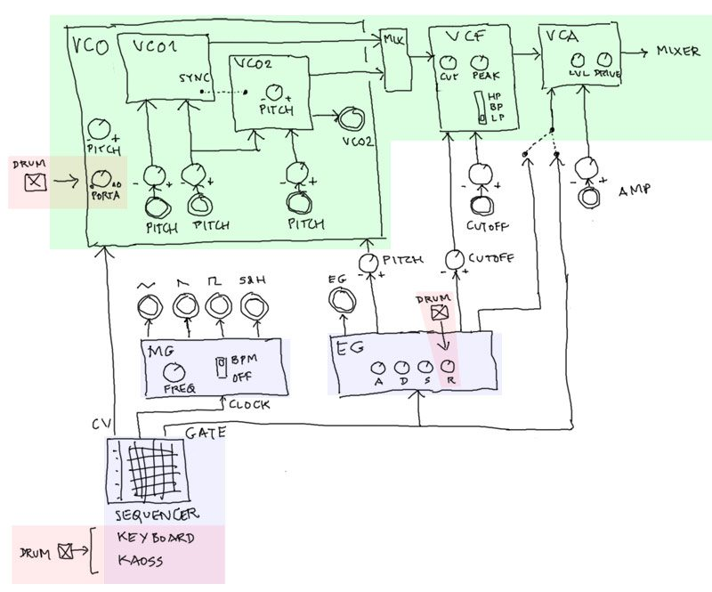
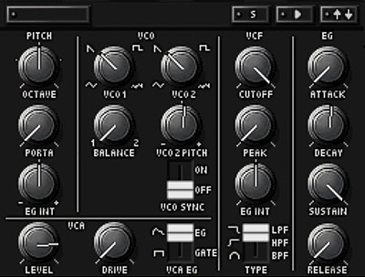
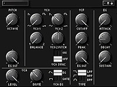
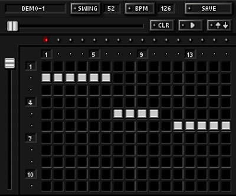
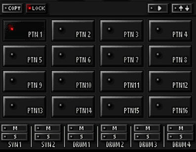
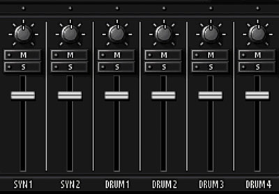

Two synths, drums that are secretly synths, a patchbay, a six-track song sequencer, and eight-player jams. The tour of everything you haven't met yet — and where you already built it.
This is the DS-10's semi-modular heart, inherited from the MS-20: two modulation sources — the LFO (a slow wobble) and the EG (a per-note envelope) — that you cable into three destinations: the note's pitch, the filter's cutoff, or the amp. Power on, hit run, then tap jacks to plug in cords and hear what each routing does.
Try LFO→Pitch (vibrato), LFO→Cutoff (auto-wah), LFO→Amp (tremolo); then EG→Cutoff — that's the acid filter pluck of lesson 06 — and EG→Pitch for a percussive blip. Combine them: EG→Cutoff + LFO→Amp is a whole groove from one note.

lfo.connect(osc.detune) — a signal continuously
summed into the destination parameter. The EG cord is a scheduled shape: every note we ramp the
destination (setValueAtTime → ramp…). A running signal vs a drawn curve — the DS-10's
patch panel lets you point either one at anything.The DS-10 gives you two of these synths at once — SYNTH 1 and SYNTH 2 — so a typical patch is a bass on one and a lead (or a call-and-response) on the other. Each one is exactly the monophonic voice you built in lesson 05: one note at a time (that's what monophonic means — see the mono vs poly interlude), osc → filter → amp.
One upgrade over the 303: each synth has two oscillators. Detune them a hair and the tone thickens; route VCO 2 into the amp instead and you get ring modulation — clangy, metallic, bell-like tones — another cord on that same patch panel.

The four-part drum machine doesn't play recordings — it uses the exact same synthesis engine as the synths. Every kick, snare and hat is an oscillator, some noise and an envelope, built from scratch. Which means you already made the DS-10's drum kit back in lesson 11:

Because each drum is a tiny synth, you can redesign it — and even give one drum its own effect (a touch of chorus on just the hat) without touching the kick. Lesson 11 is, quite literally, the DS-10 drum editor.
Those instruments — 2 synths + 4 drums = six tracks — all run on one 16-step sequencer. For each synth step you set a note, a gate (length / legato for slides), a volume and pan, plus up to two knobs of Kaoss automation — your finger-sweep on the X/Y pad, recorded per step. That automation lane is how the "ride the filter" performance gets baked into the pattern.
Fill up to 16 patterns, then chain them in song mode into a full arrangement — intro, verse, drop. You built this whole stack already: the clock (10), the drum grid (12), the 303 sequencer (13), and the multi-track groovebox on one shared clock (16).


The real DS-10 sequencer & pattern screens. © Korg / AQ Interactive.
[A,A,B,A,C,…].
Arrangement is one more layer of the same idea: music is data on a grid.
Add it up: two synths built from an osc, a filter and an envelope; drums synthesised the same way; a resonant filter you ride with your hands; a patchbay; a six-track sequencer glued with delay. That's the DS-10 — and it's every lesson in this course, assembled. The machine we quietly rebuilt from first principles is the one that inspired the whole thing.
Your AcidBox app is exactly this: a DS-10-style pocket groovebox, born from lesson 16. Go make some acid on it.
▶ Open AcidBox — your pocket groovebox ← Back to Acid Lab